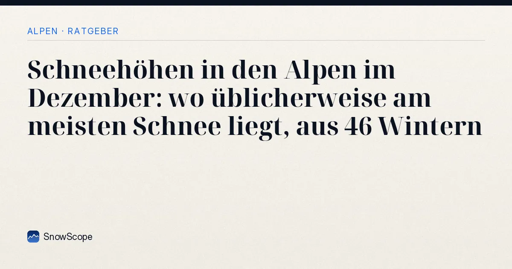

Schneehöhen in den Alpen im Dezember: wo üblicherweise am meisten Schnee liegt, aus 46 Wintern
Im Dezember fragen alle, welches Alpenskigebiet wirklich Schnee hat, und die ehrliche Antwort ist eine Rangliste, kein Name. Wir haben zwölf bekannte Skigebiete in Frankreich, der Schweiz, Österreich und Italien genommen und unserer Historie aus 46 Wintern eine Frage gestellt: Wie viel Schnee liegt in einem üblichen Dezember an der Mittelstation und am Gipfel? Das Ergebnis teilt die Alpen in drei Gruppen.
Die Live-Schneeprognose für Alps in der SnowScope-AppSchneehöhen, Pulverschnee-Alarme und 3D-Karte, gratis.
Die hohe französische Gruppe führt
Die drei tiefsten Dezember an der Mittelstation liegen alle in den französischen Alpen: Val Thorens (France): 89 cm an der Mittelstation (2473 m), 155 cm am Gipfel (3221 m); Tignes – Val d'Isère (France): 80 cm an der Mittelstation (2503 m), 161 cm am Gipfel (3447 m); Les Deux Alpes (France): 77 cm an der Mittelstation (2397 m), 169 cm am Gipfel (3511 m). Hohe Orte und hohe Mittelstationen sind der gemeinsame Nenner; keines der drei braucht das Tal zum Skifahren.
Die Gletscher- und Hochdorf-Gruppe
Knapp dahinter: Saas-Fee (Switzerland): 68 cm an der Mittelstation (2668 m), 158 cm am Gipfel (3556 m); Alpe d'Huez (France): 62 cm an der Mittelstation (2215 m), 158 cm am Gipfel (3306 m); Sölden (Austria): 62 cm an der Mittelstation (2295 m), 140 cm am Gipfel (3245 m); St. Anton (Austria): 62 cm an der Mittelstation (1962 m), 110 cm am Gipfel (2642 m). Die Schweizer Skigebiete tragen an der Mittelstation weniger, als ihre Gipfel vermuten lassen, weil ihre Dörfer tief in den Tälern liegen; ihre Gipfel gehören in jedem Monat zu den schneereichsten der Alpen.
Die tiefere und östliche Gruppe
Der Rest: Zermatt (Switzerland): 54 cm an der Mittelstation (2715 m), 137 cm am Gipfel (3872 m); Verbier (Switzerland): 53 cm an der Mittelstation (2103 m), 137 cm am Gipfel (3301 m); Hintertux (Austria): 53 cm an der Mittelstation (2372 m), 96 cm am Gipfel (3245 m); Cortina d'Ampezzo (Italy): 30 cm an der Mittelstation (1799 m), 72 cm am Gipfel (2739 m); Kitzbühel (Austria): 23 cm an der Mittelstation (1377 m), 45 cm am Gipfel (1993 m). Das sind große, ausgezeichnete Skigebiete, deren natürliche Dezember-Schneehöhe an der Mittelstation bescheiden ist; ihr früher Winter läuft über Beschneiung und die höchsten Lifte.
Der Boden: ein schwacher Dezember
Eine Rangliste üblicher Dezember verbirgt das Risiko. Die Schneehöhe, die neun von zehn Dezembern an der Mittelstation erreicht haben, ist der nützliche Boden: Val Thorens 49 cm; Tignes – Val d'Isère 43 cm; Les Deux Alpes 40 cm; Saas-Fee 37 cm; Alpe d'Huez 31 cm; Sölden 33 cm. Die hohen französischen Orte und Saas-Fee behalten auch in einem schwachen Dezember eine echte Decke; die meisten anderen nicht.
Die Rangliste Skigebiet für Skigebiet lesen
Val Thorens: 89 cm an der Mittelstation, Boden 49 cm, 155 cm am Gipfel, 273 cm im März am Gipfel, 21 sichere Wochen. Tignes – Val d'Isère: 80 cm an der Mittelstation, Boden 43 cm, 161 cm am Gipfel, 263 cm im März am Gipfel, 21 sichere Wochen. Les Deux Alpes: 77 cm an der Mittelstation, Boden 40 cm, 169 cm am Gipfel, 334 cm im März am Gipfel, 20 sichere Wochen. Saas-Fee: 68 cm an der Mittelstation, Boden 37 cm, 158 cm am Gipfel, 255 cm im März am Gipfel, 21 sichere Wochen. Alpe d'Huez: 62 cm an der Mittelstation, Boden 31 cm, 158 cm am Gipfel, 318 cm im März am Gipfel, 18 sichere Wochen. Sölden: 62 cm an der Mittelstation, Boden 33 cm, 140 cm am Gipfel, 240 cm im März am Gipfel, 17 sichere Wochen. St. Anton: 62 cm an der Mittelstation, Boden 31 cm, 110 cm am Gipfel, 230 cm im März am Gipfel, 17 sichere Wochen. Zermatt: 54 cm an der Mittelstation, Boden 28 cm, 137 cm am Gipfel, 215 cm im März am Gipfel, 18 sichere Wochen. Verbier: 53 cm an der Mittelstation, Boden 30 cm, 137 cm am Gipfel, 235 cm im März am Gipfel, 19 sichere Wochen. Hintertux: 53 cm an der Mittelstation, Boden 27 cm, 96 cm am Gipfel, 169 cm im März am Gipfel, 15 sichere Wochen. Cortina d'Ampezzo: 30 cm an der Mittelstation, Boden 7 cm, 72 cm am Gipfel, 132 cm im März am Gipfel, 0 sichere Wochen. Kitzbühel: 23 cm an der Mittelstation, Boden 6 cm, 45 cm am Gipfel, 111 cm im März am Gipfel, 0 sichere Wochen.
Zwei Zahlen pro Skigebiet erzählen die Dezembergeschichte: die übliche Schneehöhe an der Mittelstation, also das, was die Pisten über dem Dorf zeigen, und der Gipfelwert, auf dem die höchsten Lifte öffnen. Ein Skigebiet kann bei der ersten niedrig und bei der zweiten hoch liegen; das ist die Gletscher- und Hochkamm-Gruppe, in der Dezemberski echt ist, aber auf den oberen Berg konzentriert.
So nutzt man die Zahlen für eine Buchung
Man nimmt die übliche Dezember-Schneehöhe an der Mittelstation und vergleicht sie mit dem Neun-von-zehn-Boden: Liegt der Boden nahe am üblichen Wert, ist das Gebiet stetig; klafft eine große Lücke, schwankt es von Winter zu Winter. Dann schaut man auf der Seite des Skigebiets auf die Wochen mit echtem Schnee, wo dieselben 46 Winter Woche für Woche stehen, und bucht die Wochen, die die Linie in neun von zehn Wintern erreichen, nicht die, die sie nur in der Hälfte erreichen.
Diese Werte sind Schätzungen vergangener Winter für jedes Gebiet, keine eigenen Messungen der Skigebiete, und sie beschreiben Naturschnee: Die präparierten Pisten eines großen Skigebiets sind meist in besserem Zustand, als die Naturzahl allein vermuten lässt, besonders im Dezember, wenn die Beschneiung seit Wochen läuft.
Wer bis März warten kann
Der März ist an den Gipfeln der tiefste Monat, und die Abstände schließen sich: Val Thorens 273 cm; Tignes – Val d'Isère 263 cm; Les Deux Alpes 334 cm; Saas-Fee 255 cm; Alpe d'Huez 318 cm; Sölden 240 cm; St. Anton 230 cm; Zermatt 215 cm am Gipfel in einem üblichen März. Die Dezember-Rangliste sagt, wohin jetzt; die März-Zahlen sagen, warum der ganze Alpenbogen später eine Reise wert ist.
Tipps für Skifahrer
- Für eine Dezemberwoche mit Naturschnee auf Dorfhöhe die hohen französischen Orte oder Saas-Fee wählen.
- In den Ostalpen im Dezember die Gletscher und die höchsten Lifte fahren; die Mittelstationen sind in einem üblichen Jahr dünn.
- Unsere Schneehöhen sind eine Schätzung für das Gebiet aus vergangenen Wintern, keine Messungen der Skigebiete; Liftöffnungen auf den offiziellen Seiten.
- Vor dem Buchen auf jeder Skigebietsseite die Wochen mit echtem Schnee prüfen: Neun-von-zehn-Winter-Wochen sind die sicheren.
Quellen und Nachweise
- Wikipedia, „Liste von Skigebieten in den Alpen“, abgerufen am 22 November 2026. de.wikipedia.org/wiki/Liste_von_Skigebieten_in_den_Alpen
Zu diesen Zahlen
Schneewerte: SnowScope-Schneehistorie, 46 vergangene Winter (1980-81 bis 2025-26) auf drei Höhen des Skigebiets (eine Schätzung für eine Fläche, keine Meldungen des Skigebiets). Lifte, Pisten und Anreise: die Quellen unten, geprüft am angegebenen Datum.
Diesen Bericht zitieren
Für Forschung, Lehre oder Presse: Zahlen und Grafiken sind unter CC BY 4.0 mit dieser Quellenangabe frei nutzbar.
SnowScope (2026), Schneehöhen in den Alpen im Dezember: wo üblicherweise am meisten Schnee liegt, aus 46 Wintern, https://snowscope.app/blog/de/2026/11/schneehoehen-alpen-dezember-where-the-most-snow-lies-46-winters.html, abgerufen am 2026-11-23
SnowScope (Atlas Labs). (2026, November 23). Schneehöhen in den Alpen im Dezember: wo üblicherweise am meisten Schnee liegt, aus 46 Wintern. SnowScope snow reports. https://snowscope.app/blog/de/2026/11/schneehoehen-alpen-dezember-where-the-most-snow-lies-46-winters.html
BibTeX
@misc{snowscope2026schneehoehenalpendezembe,
author = {{SnowScope (Atlas Labs)}},
title = {Schneehöhen in den Alpen im Dezember: wo üblicherweise am meisten Schnee liegt, aus 46 Wintern},
year = {2026},
month = nov,
howpublished = {\url{https://snowscope.app/blog/de/2026/11/schneehoehen-alpen-dezember-where-the-most-snow-lies-46-winters.html}},
note = {Published 2026-11-23 09:30 UTC; accessed 2026-11-23}
}· CC BY 4.0 · Methoden, Daten und Werkzeuge →
Alps folgen
Gratis: eine Nachricht, wenn Neuschnee kommt, und jeden Morgen die Vorhersage.